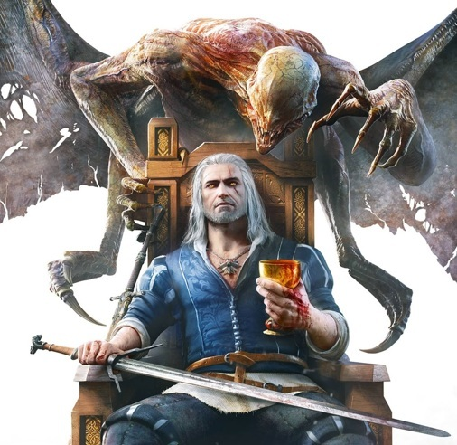
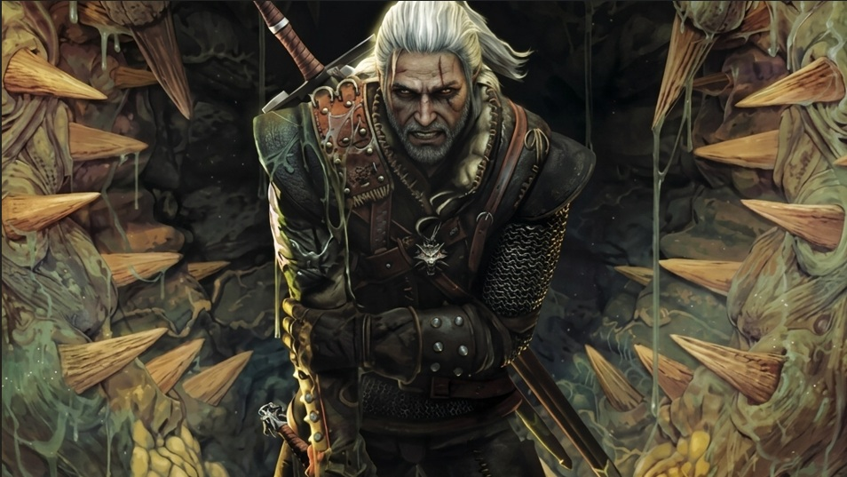

Videojuegos
Desde el primer juego de 2007 hasta la aclamada Cacería Salvaje de 2015: la trilogía de rol de CD Projekt RED.
Conocer los juegos
Monstruos, política y destino
Descubre el mundo de Geralt de Rivia, el brujo que caza monstruos por dinero y termina en el centro de una guerra entre reinos. Videojuegos, serie y libros en un solo lugar.
Tres formas de entrar al mismo universo.

Desde el primer juego de 2007 hasta la aclamada Cacería Salvaje de 2015: la trilogía de rol de CD Projekt RED.
Conocer los juegos
La adaptación de Netflix con Geralt, Yennefer y Ciri: temporadas, películas animadas y una precuela.
Ver la serie
La obra original de Andrzej Sapkowski: dos libros de relatos, cinco novelas de la saga y una novela independiente.
Leer sobre los librosTodo lo que conviene saber antes de entrar al Continente.
The Witcher nació en los libros del escritor polaco Andrzej Sapkowski. Cuenta la historia de Geralt de Rivia, un brujo: un cazador de monstruos entrenado desde niño y mutado para enfrentar criaturas que los ejércitos no pueden detener.
Con los años, la saga saltó a los videojuegos de CD Projekt RED y a una serie de Netflix. Cada versión cuenta su propia historia, pero todas comparten el mismo mundo: reinos que se disputan tierras, magos con planes propios y gente común que paga para sobrevivir.
Cuatro ideas que se repiten en los libros, los juegos y la serie.
Un mundo de reinos del Norte, el Imperio de Nilfgaard al sur y tierras salvajes entre ambos.
Cinco hechizos simples (Aard, Igni, Quen, Yrden y Axii) que los brujos combinan con la espada.
Un brujo cobra por matar monstruos, pero el trabajo empieza investigando qué es la criatura y cómo se la vence.
Dos espadas: la de acero para personas y animales, y la de plata para los monstruos.
Cada escuela entrena a sus brujos con un estilo distinto.

La escuela de Geralt, en Kaer Morhen.

Conocida por un estilo sigiloso y agresivo.

Famosa por su dominio de los Signos.

Asociada a la armadura pesada.

Con reputación de asesinos discretos.